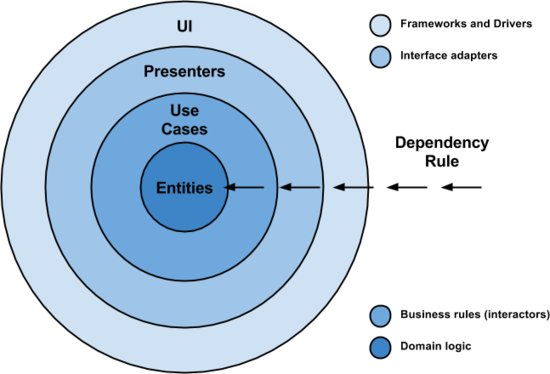
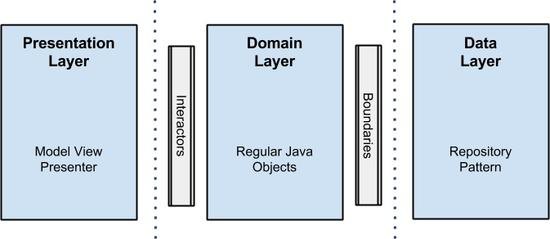
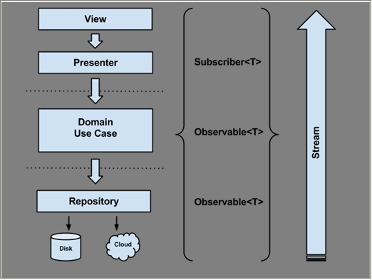

解析Android架构设计原则
来源：伯乐在线
原文出处：Fernando Cejas 译文出处：张挥戈
嘿！经过一段时间收集了大量反馈意见后，我认为应该来说说这个话题了。我会在这里给出我认为构建现代移动应用（Android）的好方法，这会是另一番体味。
开始之前，假设你已经阅读过我之前撰写的文章“Architecting Android…The clean way?”。如果还没有阅读过，为了更好地理解这篇文章，应借此机会读一读：

架构演变
演变意味着一个循序渐进的过程，由某些状态改变到另一种不同的状态，且新状态通常更好或更复杂。
照这么一说，软件是随着时间发展和改变的，是架构上的发展和改变。实际上，好的软件设计必须能够帮助我们发展和扩充解决方案，保持其健壮性，而不必每件事都重写代码（虽然在某些情况下重写的方法更好，但是那是另一篇文章的话题，所以相信我，让我们聚焦在前面所讨论的话题上）。
在这篇文章中，我将讲解我认为是必需的和重要的要点，为了保持基本代码条理清晰，要记住下面这张图片，我们开始吧！

响应式方法：RxJava
因为已经有很多这方面的文章，还有这方面做得很好、令人景仰的人，所以我不打算在这里讨论RxJava的好处（我假设您已经对它有所体验了）。但是，我将指出在Android应用程序开发方面的有趣之处，以及如何帮助我形成第一个清晰的架构的方法。
首先，我选择了一种响应式的模式通过转换usecase（在这个清晰的架构命名规则中，其被称为interactor）返回Observables
public abstract class UseCase {
private final ThreadExecutor threadExecutor;
private final PostExecutionThread postExecutionThread;
private Subscription subscription = Subscriptions.empty();
protected UseCase(ThreadExecutor threadExecutor,
PostExecutionThread postExecutionThread) {
this.threadExecutor = threadExecutor;
this.postExecutionThread = postExecutionThread;
}
protected abstract Observable buildUseCaseObservable();
public void execute(Subscriber UseCaseSubscriber) {
this.subscription = this.buildUseCaseObservable()
.subscribeOn(Schedulers.from(threadExecutor))
.observeOn(postExecutionThread.getScheduler())
.subscribe(UseCaseSubscriber);
}
public void unsubscribe() {
if (!subscription.isUnsubscribed()) {
subscription.unsubscribe();
}
}
}
正如你所看到的，所有用例继承这个抽象类，并实现抽象方法buildUseCaseObservable()。该方法将建立一个Observables
需要强调是，在execute()方法中，要确保Observables
到目前为止，我们的Observables
观察者是这样的：
private final class UserListSubscriber extends DefaultSubscriber<List<User>> {
@Override public void onCompleted() {
UserListPresenter.this.hideViewLoading();
}
@Override public void onError(Throwable e) {
UserListPresenter.this.hideViewLoading();
UserListPresenter.this.showErrorMessage(new DefaultErrorBundle((Exception) e));
UserListPresenter.this.showViewRetry();
}
@Override public void onNext(List<User> users) {
UserListPresenter.this.showUsersCollectionInView(users);
}
}
每个观察者都是每个presenter的内部类，并实现了一个Defaultsubscriber
将所有的片段放在一起后，通过下面的图，你可以获得完整的概念：

让我们列举一些摆脱基于RxJava方法的好处：
在观察者（Subscribers）与被观察者（Observables）之间去耦合：更加易于维护和测试。
- 简化异步任务：如果要求多个异步执行时，如果需要一个以上异步执行的级别，Java的thread和future的操作和同步比较复杂，因此通过使用调度程序，我们可以很方便地（不需要额外工作）在后台与主线程之间跳转，特别是当我们需要更新UI时。还可以避免“回调的坑”—— 它使我们代码可读性差，且难以跟进。
- 数据转换/组成：在不影响客户端情况下，我们能够整合多个Observables，使解决方案更灵活。
- 错误处理：在任何Observables内发生错误时，就向消费者发出信号。
从我的角度看有一点不足，甚至要为此需要付出代价，那些还不熟悉概念的开发人员还是要遵循学习曲线。但你从中得到了极有价值的东西。为了成功而reactive起来吧！
依赖注入：Dagger 2
关于依赖注入，因为我已经写了一篇完整的文章，我不想说太多。强烈建议你阅读它，这样我们就可以接着说下面的内容了。
值得一提的是，通过实现一个像Dagger 2那样的依赖注入框架我们能够获得：
- 组件重用，因为依赖的对象可以在外部注入和配置。
- 当注入对象作为协作者（collaborators）时，由于对象的实例存在于在一个隔离和解耦地方，这样在我们的代码库中，就不需要做很多的改变，就可以改变任何对象的实现。
- 依赖可以注入到一个组件：这些将这些模拟实现的依赖对象注入成为可能，这使得测试更容易。
Lambda表达式：Retrolambda
没有人会抱怨在代码中使用Java 8的lambada表达式，甚至在简化并摆脱了很多样板代码以后，使用得更多，如你看到这段代码：
private final Action1<UserEntity> saveToCacheAction =
userEntity -> {
if (userEntity != null) {
CloudUserDataStore.this.userCache.put(userEntity);
}
};
然而，我百感交集，为什么呢？我们曾在@SoundCloud讨论Retrolambada，主要是是否使用它，结果是：
- 赞成的理由：
- Lambda表达式和方法引用
- “try-with-resources”语句
- 使用karma做开发
- 赞成的理由：
- 反对的理由：
- Java 8 API的意外使用
- 十分令人反感的第三方库
- 要与Android一起使用的第三方插件Gradle
- 反对的理由：
最后，我们认定它不能为我们解决任何问题：你的代码看起来很好且具有可读性，但这不是我们与之共存的东西，由于现在所有功能最强大的IDE都包含代码折叠式选项，这就涵盖这一需求了，至少是一个可接受的方式。
说实话，尽管我可能会在业余时间的项目中使用它，但在这里使用它的主要原因是尝试和体验Android中Lambda表达式。是否使用它由你自己决定。在这里我只是展示我的视野。当然，对于这样一项了不起的工作，这个库的作者值得称赞。
测试方法
在测试方面，与示例的第一个版本相关的部分变化不大：
- 表现层：用Espresso 2和Android Instrumentation测试框架测试UI。
- 领域层：JUnit + Mockito —— 它是Java的标准模块。
- 数据层：将测试组合换成了Robolectric 3 + JUnit + Mockito。这一层的测试曾经存在于单独的Android模块。由于当时（当前示例程序的第一个版本）没有内置单元测试的支持，也没有建立像robolectric那样的框架，该框架比较复杂，需要一群黑客的帮忙才能让其正常工作。
幸运的是，这都是过去的一部分，而现在所有都是即刻可用，这样我可以把它们重新放到数据模块内，专门为其默认的测试路径：src/test/java。
包的组织
我认为一个好的架构关键因素之一是代码/包的组织：程序员浏览源代码遇到的第一件事情就是包结构。一切从它流出，一切依赖于它。
我们能够辨别出将应用程序封装进入包（package）的2个路径：
- 按层分包：每一个包（package）中包含的项通常不是彼此密切相关的。这样包的内聚性低、模块化程度低，包之间偶合度高。因此，编辑某个特性要编辑来自不同包的文件。另外，单次操作几乎不可能删除掉某个功能特性。
- 按特性分包：用包来体现特性集。把所有相关某一特性（且仅特性相关）的项放入一个包中。这样包的内聚性高，模块化程度高，包之间偶合度低。紧密相关的项放在一起。它们没有分散到整个应用程序中。 我的建议是去掉按特性分包，会带来的好处有以下主要几点：
模块化程度更高
- 代码导航更容易
- 功能特性的作用域范围最小化了
- 如果与功能特性团队一起工作（就像我们在@SoundCloud的所作所为），也会是非常有趣的事情。代码的所有权会更容易组织，也更容易被模块化。在许多开发人员共用一个代码库的成长型组织当中，这是一种成功。

如你所见，我的方法看起来就像按层分包：这里我可能会犯错（例如，在“users”下组织一切），但在这种情况下我会原谅自己，因为这是个以学习为目的的例子，而且我想显示的是清晰架构方法的主要概念。领会其意，切勿盲目模仿:-)。
还需要做的事：组织构建逻辑
我们都知道，房子是从地基上建立起来的。软件开发也是这样，我想说的是，从我的角度来看，构建系统（及其组织）是软件架构的重要部分。
在Android平台上，我们采用Gradle，它事实上是一种与平台无关的构建系统，功能非常强大。这里的想法是通过一些提示和技巧，让你组织构建应用程序时能够得到简化。
- 在单独的gradle构建文件中按功能对内容进行分组

def ciServer = 'TRAVIS'
def executingOnCI = "true".equals(System.getenv(ciServer))
// Since for CI we always do full clean builds, we don't want to pre-dex
// See http://tools.android.com/tech-docs/new-build-system/tips
subprojects {
project.plugins.whenPluginAdded { plugin ->
if ('com.android.build.gradle.AppPlugin'.equals(plugin.class.name) ||
'com.android.build.gradle.LibraryPlugin'.equals(plugin.class.name)) {
project.android.dexOptions.preDexLibraries = !executingOnCI
}
}
}
apply from: 'buildsystem/ci.gradle'
apply from: 'buildsystem/dependencies.gradle'
buildscript {
repositories {
jcenter()
}
dependencies {
classpath 'com.android.tools.build:gradle:1.2.3'
classpath 'com.neenbedankt.gradle.plugins:android-apt:1.4'
}
}
allprojects {
ext {
...
}
}
...
因此，你可以用“apply from: ‘buildsystem/ci.gradle’”插入到任何Gradle建立的文件中进行配置。不要把所有都放置在一个build.gradle文件中，否则就是去创建一个怪物，这是教训。
- 创建依赖关系图
...
ext {
//Libraries
daggerVersion = '2.0'
butterKnifeVersion = '7.0.1'
recyclerViewVersion = '21.0.3'
rxJavaVersion = '1.0.12'
//Testing
robolectricVersion = '3.0'
jUnitVersion = '4.12'
assertJVersion = '1.7.1'
mockitoVersion = '1.9.5'
dexmakerVersion = '1.0'
espressoVersion = '2.0'
testingSupportLibVersion = '0.1'
...
domainDependencies = [
daggerCompiler: "com.google.dagger:dagger-compiler:${daggerVersion}",
dagger: "com.google.dagger:dagger:${daggerVersion}",
javaxAnnotation: "org.glassfish:javax.annotation:${javaxAnnotationVersion}",
rxJava: "io.reactivex:rxjava:${rxJavaVersion}",
]
domainTestDependencies = [
junit: "junit:junit:${jUnitVersion}",
mockito: "org.mockito:mockito-core:${mockitoVersion}",
]
...
dataTestDependencies = [
junit: "junit:junit:${jUnitVersion}",
assertj: "org.assertj:assertj-core:${assertJVersion}",
mockito: "org.mockito:mockito-core:${mockitoVersion}",
robolectric: "org.robolectric:robolectric:${robolectricVersion}",
]
}
apply plugin: 'java'
sourceCompatibility = 1.7
targetCompatibility = 1.7
...
dependencies {
def domainDependencies = rootProject.ext.domainDependencies
def domainTestDependencies = rootProject.ext.domainTestDependencies
provided domainDependencies.daggerCompiler
provided domainDependencies.javaxAnnotation
compile domainDependencies.dagger
compile domainDependencies.rxJava
testCompile domainTestDependencies.junit
testCompile domainTestDependencies.mockito
}
如果想在项目的不同模块间重用相同的组件版本，这很好；否则就要在不同的模块间使用不同的版本的组件依赖。另外一点，你是在同一个地方控制依赖关系，像组件版本发生冲突这样的事情一眼就能看出来。
结语
到目前为止讲了那么多，一句话，要记住没有灵丹妙药。但好的软件架构会帮助代码保持清晰和健壮，还可以保持代码的可扩展性，易于维护。
我想指出一些事情。面对软件存在的问题，要报以本应当解决的态度：
- 遵守SOLID原则
- 不要过度思考（不过度工程化）
- 务实
- 尽可能降低（Android）框架中模块的依赖性
源代码
- Clean architecture github repository – master branch
- Clean architecture github repository – releases
延伸阅读
- Architecting Android..the clean way
- Tasting Dagger 2 on Android
- The Mayans Lost Guide to RxJava on Android
- It is about philosophy: Culture of a good programmer